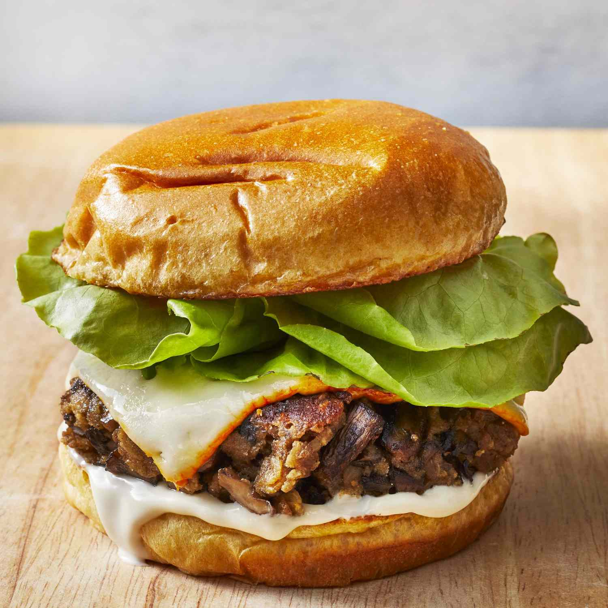

Mushroom Burger

How to make delicious Mushroom Burgers
These vegetarian mushroom burgers are as close as I've ever gotten to delicious meatless burgers.
Mushrooms really give them a meaty flavor.
I like to serve them on fresh hamburger rolls with spicy mayonnaise and a little lettuce.
Ingredients
- 4 tablespoons olive oil, divided
- 3 (8 ounce) packages sliced fresh mushrooms
- ½ medium onion, finely chopped
- 4 cloves garlic, minced
- 1 teaspoon salt
- ½ teaspoon black pepper
- ½ teaspoon dried oregano
- ¾ cup dry bread crumbs
- ⅔ cup rolled oats
- ½ cup freshly shredded Parmigiano-Reggiano cheese
- 2 large eggs, beaten
Steps to cook
Heat 2 tablespoons oil in a large skillet over medium heat.
Add mushrooms, onion, garlic, salt, pepper, and oregano;
cook and stir until mushrooms have released their juices and the liquid has evaporated,
about 10 minutes. Remove from the heat.
Transfer mushrooms to a cutting board and clean the skillet.
Chop mushrooms into small chunks, then transfer to a large bowl.
Mix in bread crumbs and oats, and season with salt and pepper as needed.
Stir in Parmigiano-Reggiano cheese, then eggs; let stand until bread crumbs have absorbed any excess liquid, about 15 minutes.
Use moist hands to form mixture, 1/4 cup at a time, into patties.
Heat remaining 2 tablespoons oil in the skillet over medium heat.
Pan-fry patties in the hot skillet until golden brown and cooked through,
2 1/2 to 3 minutes per side.